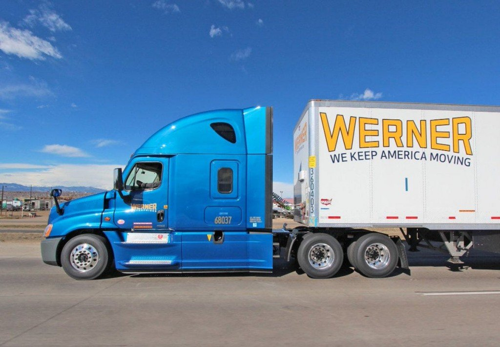

Daniel Miron Ocampo
My name is Daniel Miron Ocampo, I am a senior in cyber security engineering. My plan is to find a job in the cyber consulting industry and to better myself as a cybersecurity pentester. My college journey has not been easy, I will miss Iowa State, but I am happy that it is coming to an end and that I can move on to the next stage of my life. If I could somehow restart my college career, I would not choose a different major or go down a different path. I would still pursue the same degree but push myself to do better. Talking about cyber security is my hobby and my passion, I love teaching others about it and taking the time to do a little research in my free time. When I am not eating or sleeping, I am learning about bug bounty hunting or catching up with the news in the cybersecurity world. After college I will find the time to participate in live hacking events and meet fellow hackers, perhaps collaborating on mutual projects or forming a small consulting group that does pentesting work.
Contact: Docompo@iastate.edu
Security Operations Technical Internship
After my summer internship at Werner Enterprises, I decided to stay part time as a Security Operations associate. I work with the security analysts on configuring DLP policies, building successful anti-fishing campaigns and writing security-process oriented documentation for the team. I have learned about the importance of good oral and written communication skills when working remotely, in addition to many technical skills that I have picked up while training on how to use Google Chronicle as a SIEM/SOAR solution. I am very grateful for being asked to stay on part-time because I have picked up a lot of skills for which there is no coursework.
Governance Risk and Compliance Internship
Thanks to this internship I can better understand the intricacies of the transportation industry. In this first internship outside of Iowa State University I was a GRC intern and worked on a variety of tasks to help the security team in their compliance efforts. One of my main responsibilities was to conduct third party risk management evaluation assessments on vendors on behalf of Werner. It was critical to stay organized and communicate effectively with team members across different departments to minimize risk for the enterprise. I got a better sense of what working in a corporate environment is like and thoroughly enjoyed this summer internship experience.
In one of the most challenging classes of my college experience. I had to work with my team member to develop three varieties of a MIPS based processor. With a single-cycle, multi-cycle and pipelined architecture. This was all to be done in VHDL. The most complicated part of the project was that the final product depended on the very beginning of the class. So, you could very easily spend hours and hours fixing a simple mistake you made at the start of the semester without much experience. I was in charge of developing the control unit and the fetch logic. While my lab partner worked on the arithmetic unit. The MIPS single cycle processor was designed to fetch decode and execute instructions based on the MIPS ISA which would sometimes write back to an address field. The end-product was built from the ground up from simple logic gates to complex processor module units. I learned how to keep everything organized and how to take advantage of modularity and encapsulation the small units had to work properly before they could be used to build something more complex. I also learned the importance of perseverance and patience, nothing in this project worked right the first time so our team had to constantly fight and learn from our mistakes. Resources used included GitHub, Visual Studio and our TAs.
In this course our team learned about the software development lifecycle in addition to building an ecommerce-based app called Thrifty. This app was designed to help thrift store owners show off and sell their merchandise. It was meant to connect customers and clients in the same geographical area, since thrift stores rarely have the capabilities to ship their items to their customers. My role was as frontend Java developer, I Implemented Agile management principles to design a marketplace on Android Studio. And established secure SDLC practices to reinforce the security of team project. I learned about the importance of slow but steady meaningful progress. I also learned how to design an app on android studio. Resources used included Android Studio, GitHub and Springboot for backend.
In this project I developed an interactive cyber security curriculum for high school students. I Prepared students with the skills required to participate in a cyber defense competition. The modules I designed included content covering web app security, Wireshark, Metasploit and essential networking principles. My role was to develop the technical content while another student worked on how to best introduce this to students from an instructor's point of view. The skills I learned were to be very detail oriented and to explain my steps thoroughly since my audience were beginner high school students. I also learned about how to teach technical things in an enthusiastic way to keep people interested and engaged. The resources used included OneDrive and OWASP Juice Shop.
My senior design project has to do with securing the PowerCyber virtual infrastructure using an open source or commercial SIEM framework. The two options we are looking at include Gravwell and SecurityOnion. We will then pentest our defense structure and incorporate machine learning to detect and mitigate attacks that our SIEM does not recognize. My role in the project is project organizer in addition to implementing the SIEM solution into the PowerCyber architecture. In this first semester I have learned a lot about securing virtual assets and keeping the project organized so we do not lose track of information or details when our team looks back on past progress. I have learned about how to use MITRE caldera as an adversary emulation platform and how to use an open-source solution such as SecurityOnion to customize the best defense perimeter for cyber defense purposes. My big picture contribution is to keep our team on track for success and to coordinate team meetings and to make sure every individual on our team understands their responsibilities. As of now we are still working on the engineering design portion, but I look forward to overseeing the completion of the final product.
Team Website: https://sdmay24-29.sd.ece.iastate.edu/
The general education courses were some of my favorite classes at Iowa State. I learned numerous life lessons without being too stressed out about my grade. The four general education electives that I will be covering are ENGL 314, RUS 378, HDFS 276 and SPAN 378x. I took ENGL 314 in the spring of 2020, the semester everyone was sent home because of the pandemic. When I started that school year, I never imagined I would take my finals at my parent’s house. This course puts a heavy emphasis on technical communication. I had the opportunity to practice my writing skills with an assignment that involved writing a technical manual for a process. The process could be about anything we were interested in. I decided to base it on a weightlifting bench I made with my dad. Since there was little to do during the pandemic, I thought I could take care of two projects at once and use the final product to work out while I was indoors. Throughout the project I learned the importance of communicating a complex process in simple and easy to understand instructions. A skill that I will continue to make use of well into the future. At my part time-job I have authored a lot of documentation for the information security team, where I must ensure that I include every step that’s important. The second general elective, RUS 378 was a class about studying Russian films, which quickly became one of my all-time favorite courses. I never thought I would enjoy Russian cinema so much. While it is unnecessary to go over the content of the movies, the lesson here is that if we always stay within our own bubble, we never learn anything new or expand our minds. More than ever before, people all over the world should take the time to explore each other’s culture and traditions. And understand that there are more things that we have in common instead of differences that drive us apart. After I went through RUS 378, I took a great interest in Russian language and culture. I even learned the Russian alphabet from watching YouTube videos and forced my friends to watch some of the movies I found amusing. I went down a long rabbit hole of Russian knowledge all thanks to this class and I developed a greater appreciation for my general education electives. I enjoyed this Russian film class so much that I decided to take the Spanish department’s version of it. SPAN 378 had the same structure but with Spanish movies. Fortunately, I speak the Spanish language so not a lot of meaning was lost in translation, and I was exposed to several movies I had never heard of. I grew up in the United States, so I was rarely able to speak Spanish outside of home. Which is why I missed out on a lot of aspects of Mexican life, by taking this class I was able to reconnect with my roots and learn more about other Central and South American Spanish speaking cultures that may not necessarily be Mexican. After spending nearly ninety percent of my life in the U.S. I have lost touch with some of what makes me Mexican, this class made me realize the importance of remembering where I came from and how different my life would have been if my parents had decided to stay in Mexico. It makes me have a greater appreciation for the things that I have been blessed with as an American. It is unlikely that I would have had the money to learn and do so many of the things that make me who I am today. It is important to be a person with a mindset of gratitude and one that helps others who may not be as fortunate in the world, that is the lesson I learned from taking this film class. Finally, HDFS 276 is a human sciences class I took in my sophomore year about human sexuality. The most important thing this class taught me is how to look after your own health. At some point in the semester the professor invited a guest speaker and he spoke to us about his journey surviving testicular cancer and how his life changed after that. Hearing about all he had to live through taught me the significance of looking after yourself and that you don’t have to wait until you are forty-five years old to start checking yourself for signs of bumps and odd symptoms. The speaker was a young man in his thirties who never expected to deal with a condition like that at his young age. And although no one deserves to go through something like that, he said it taught him a lot about learning to appreciate life and good health. This is relevant to me because it was almost two years ago that my cousin Alex was treated for the same condition. It was heartbreaking for our entire family to see his health decline every single day. Thankfully he survived and has improved dramatically since that awful era. With cancer hitting so close to home I learned to be more alert of early warning signs and take my health into my own hands. Especially nowadays with greater numbers of younger people being diagnosed with cancer and other life-threatening conditions. Other than giving students a break from their technical core classes, the purpose of general education classes is to introduce students to new ideas and topics. This is the reason why I enjoyed these courses so much. They gave me a new outlook on life and the world. In life, throughout my engineering career I will run into other engineers and coworkers from all different backgrounds. It is important to try to understand their stories and their background, it brings us all together and exposes us to a range of new things we perhaps would never know that we would like. While this might not help us solve complex world problems it does help us understand another person’s struggle and that at the end of the day, we’re all on the same ship trying to stay above water.
When I was a kid, I once asked my mother, how the United States could regard itself as the freest country in the world when countries like Mexico, have more relaxed laws and regulations. As a sidenote, I lived in Mexico for two years. What my mom said in response amazes me to this day, especially since she never had a formal education. She said that it is thanks to the rule of law and a fair and level system that enforces its regulations which has facilitated so much economic and societal progress. This brings us back to the question at hand. The purpose of having and following a code of ethics is to protect people and their ideas, in that order. When we have a code of ethics people are encouraged to be creative without having to worry about their work being stolen or used to harm others. The two World Wars of the early 20th century proved that science and engineering could be used for good and evil, for right and wrong. Engineers and scientists have a moral obligation to do what is good and just. Especially because they possess an incredible amount of powerful knowledge.
In high school I learned about three types of ethics schools, deontological, virtue and consequentialist. Out of the three, I found it very difficult to support consequentialist ethics. Under this theory, the consequence of a decision has the most weight to determine whether an action was right or wrong. However, there is no way to know for certain what type of consequences a decision might have days or weeks down the road. As an example, you could give money to someone on the street but then what if they use it to buy a knife to threaten and steal from others? Are you still sitting on moral high ground? When faced with an ethical situation I have to embrace deontological ethics. Which follows the notion that there are rules and principles we must all adhere to distinguish right from wrong. I must humble myself and admit that I am far from perfect and that there are things others know that I do not understand, which is why I delegate that responsibility to another entity that is perhaps far more knowledgeable and just than myself. I consult with other people, people that have higher authority and can be more objective in their approach to my issues. As an example, I would do my due diligence and assess the situation from a legal standpoint. Will my actions break national or state laws? Will my job security be jeopardized because I breached my contract? I do not see virtue or consequentialist ethics as a viable approach to answer ethical questions.
The case study we discussed was whether information stored on devices such as the amazon Alexa could be used against you in a court. I personally could never justify having one of these devices in my home. Smartphones, TVs and even laptops are already invasive enough, but having a microphone in your home which could simultaneously receive and transmit is only a few steps removed from being a telescreen. It is not controversial to say that anything you say in the privacy of your own home should not be held against you. No one deserves to feel unsafe in their house. Other people weighed in differently stating that depending on the severity of what was said you should be held accountable. But I strongly disagree, because then who draws that line? Amazon? In many criminal cases, electronic devices are looked into to find evidence of a crime, but that is after the fact. If you do something illegal, then you may be searched but if you are an innocent citizen going about their life then listening to your online activity is not an ok thing for the state or law enforcement to do.
The three virtues that are most related to my case are integrity, honesty and self-discipline. Tech companies in the modern era are willing to do anything that makes them a quick buck, if the law is not specifically in place to protect the consumer from it. This type of behavior is not ok, in the Alexa device spying case. Amazon has no integrity and thinks it is ok to listen in on people's conversations if it means they can make a better shopping recommendation but that shows how little respect these companies have for society. They make cheap products full of bugs and vulnerabilities, make no effort to protect customer information and when a breach happens, they are not honest and sincere in helping out the people affected. Another ethical virtue that was not included is respect and responsibility. They do not take action until it is too late, or they are put in the spotlight for their wrongdoings. When is the last time companies like Facebook or Nike stood up to China to demand respect for the Uyghur people? They never call out the CCP because that’s who pays them and they would not be able to sell their products to millions of people if they stood up for what was right. In the tech sphere, it continues to be the wild west and unfortunately a lot of these giant companies have so little integrity that they don’t do the right thing unless they are called out, and by the time that happens. It’s already too late. Companies need to have the self-discipline to do the right thing and police their own activities.
I began my college journey in the summer of 2017 as a member of the APEX program. This was a very unique opportunity where I got to live in Ames, take classes and meet new people during the summer session. Thanks to this program, I earned a few credits to kickstart my degree and became more confident in my academic abilities. Programs like APEX are so important to people like me because as the first person in my family to go to college, I needed all the help I could get. I could not ask my parents or an older brother for help or guidance. I had to figure everything out for myself. Fortunately, the program had a strong network of peer mentors and college liaisons that would be there to lend a helping hand. I hold a deep sense of gratitude for the people that made a program like APEX possible for me and so many others. However, none of this would have happened if I didn’t take charge of my education as a Senior in high school. That will be a running theme throughout the next several years, and a core value that I hold strongly.
During my freshman year I wanted to take chances and try new things. Which is why I joined Airforce ROTC and started to work at the dining center. Both extracurricular activities tested my ability to wake up early and stay awake. Never had I done so much exercise, my body was exhausted. After a semester I unenrolled from the program but I was proud of how much I had accomplished, I felt lighter, more alert and I rarely fell asleep in class despite getting up so early. My academic performance in my first semester was also solid. The summer after freshman year I did not think I would be qualified enough for an engineering internship which is why I opted to study abroad in Germany. It was a risky move because as a freshman I was low on cash, and I had never been outside of the country on my own. But I decided to go for it anyway and experience something new. During this study abroad I received credits for a few courses and learned what it was like to explore a new country. Since Germany is a country that is still considered to be part of the West, there wasn’t much of a culture shock. A good number of people were also English speakers, so I didn’t have much trouble when I was lost. The only challenging part was trying to speak their language. I had previous German language classes before the trip but could not piece together anything too complex. During the summer session I took a technical elective where I had to work in a team to implement and optimize an assembly line project. The assignment was challenging for me since it was designed to be a senior level course but fortunately my German teammates were better coders than I was, and I could ask them for help or advice to complete my assigned portions. It was one of many valuable lessons I would learn in college, that life would often present me with obstacles that I am unprepared to face, but with time, willpower and perhaps some luck I can make sense of what is being asked and be successful. As a sophomore I kept taking chances and seeking new opportunities, in the fall of 2018 I decided to apply to become a chemistry tutor, which was a subject I felt comfortable with. While I was nervous, I combated these feelings by doing my reviewing the concepts and preparing good problems that my tutees would find helpful. In the end I improved my communication skills and made some extra money for my work. The summer of 2019, I was able to secure my first internship experience at a company called Eurofins Scientific, this was back when I was still a chemical engineering major. I was part of the vitamin analysis team, and even though I had a good understanding of basic chemistry I was learning a lot of new information every day. By the end of the internship, my notebook was full of notes and data that was too technical to be covered in a college course. Since I had to make sure that everything, I did was documented I had to be good at keeping organized and neat records for the other lab technicians. Despite this I still made mistakes and anytime I did I always found it better to admit it and ask someone more knowledgeable for assistance. Never did I attempt to hide or lie about what I had done. During my junior year I continued to work at the dining center and began to seriously struggle with my upper-level classes. It was during this time that I decided to switch out to my current major, cyber security engineering. I had a tough time justifying my interest in a career in the chemical engineering field. This was one of the best decisions I have ever made in college. I have never looked back with any sort of regret and continue to love cyber security more as I have progressed throughout my degree. I cannot say that any of this has been easy. Getting to the point at which I’m at right now has taken a lot of perseverance. Even during my low points, I would still go to class, apply for internships, go to the career fair and do my best to keep getting closer to my goals. After a while I was able to secure my first cyber related internship at a transportation company. While it was challenging, I enjoyed the learning process. I woke up every morning and I felt nothing but excitement to get to the office and see my coworkers. Before this internship, I had never worked in an environment where people liked their jobs, people at Werner Enterprises were kind and patient. They enjoyed sharing their knowledge and would take the time to understand the issues. Throughout my internship everything I had learned from courses, labs, YouTube videos and guest speakers was finally coming together. I had the privilege of leading security presentations for new hires, creating documentation for the security team, all to keep company information secure. Aside from my routine work, we were grouped together with other interns to develop a team presentation which had the focus of attempting to provide a solution to any one problem within the enterprise. My team’s presentation was about providing alternative energy source options to engine idling. While I won’t go into project specifics, our project involved a lot of research, talking to department leadership and practice to get it right and have the presentation memorized. It was nerve wracking to present in front of about 100 other company employees including senior leadership. I knew it was going to be challenging but it was a big learning moment. After this summer internship I decided to stay and continue working with the security team through the fall 2023 semester. It can sometimes be a little overwhelming to have a job and deal with my schoolwork, but I make it work because I understand the value of having professional experience. As I wrap up my final year at Iowa State, I continue to make progress on my senior design project. An initiative I am really looking forward to involves developing a defense framework for a virtual power grid called PowerCyber. Our group is still in the 491-design phase so there is a lot of planning and initial setup that needs to be done but we are on our way to implementing it. I have had a good journey at Iowa State, but I am looking forward to being done and one day starting my career as a cyber security engineer. I am planning to seek a role within the security operations team where I can be involved with incident response and keeping a company’s information safe from cyber criminals.